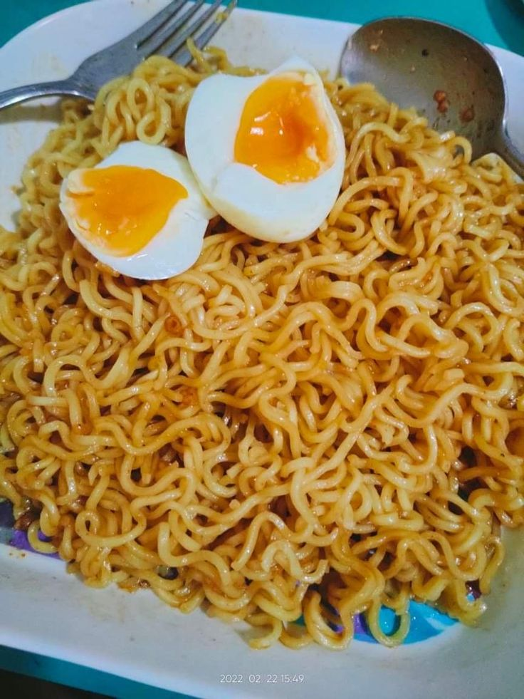

Filipino Pancit Canton Recipe
Home

Source: Pinterest Website
Instant Pancit Canton
This is a quick and easy meal from the Philippines. Mostly it is the go to breakfast, merienda, or midnight snack of Filipinos. Partnered with egg or some hotdogs are the best with it.
This is an holy grail meal from people out there!
Ingredients
- Lucky Me Pancit Canton Noodle
- Liquid Sachet
- Powder Sachet
- Water
- Egg
Steps to Prepare
-
Boil the egg:
Place an egg into a boiling water for exactly 8 minutes.
-
Cool the egg:
Transfer the egg immediately to an ice bath or cold running water.
-
Cook the noodles:
Boil the Pancit Canton noodles in a separate pot for 3 minutes.
-
Prep the sauces:
Empty the liquid and powder sachets onto a serving plate.
-
Mix the noodles:
Drain the noodles completely and toss them thoroughly in the sauce.
-
Peel and slice:
Gently peel the cooled egg and slice it in half.
-
Assemble and serve:
Place the egg halves on top of your mixed noodles.